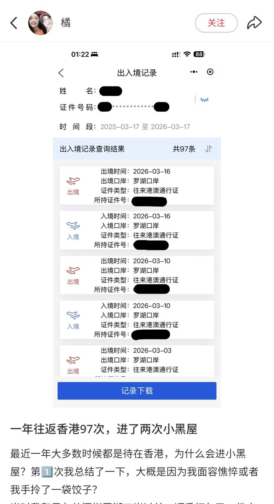
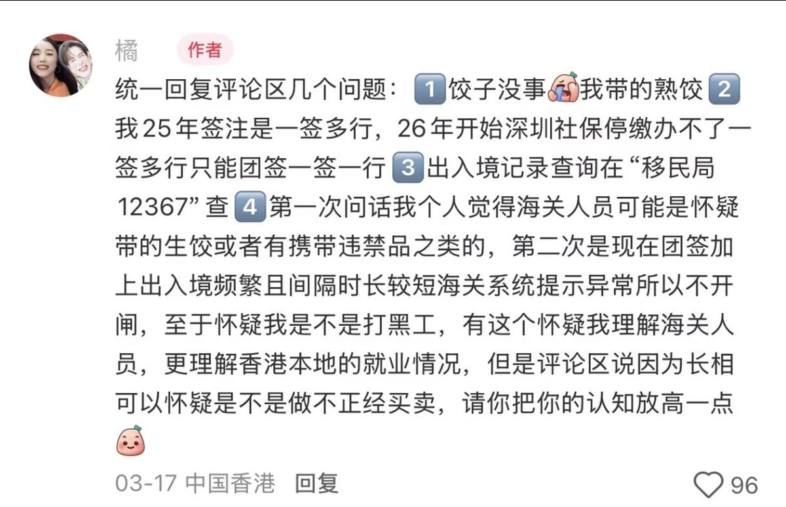
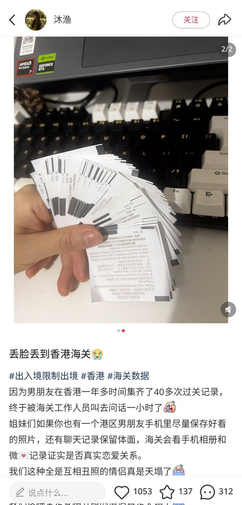

RedFox（2代目）
@FoxRed695449
@aa773314671984 @Nohomework0 还受限制，受啥限制？
签注用完就去找个自助机随便打
小红上面一搜一大把因为一年以旅游签去40几次甚至90几次被查但还给放行的，团队签都能这么多次
更别提看看港府统计处资料，内地旅客的数量完全和其它国家/地区旅客数量不是同一个级别的的



aa
@aa773314671984
@Nohomework0 反正你去香港不容易，受限制，还不如外国人